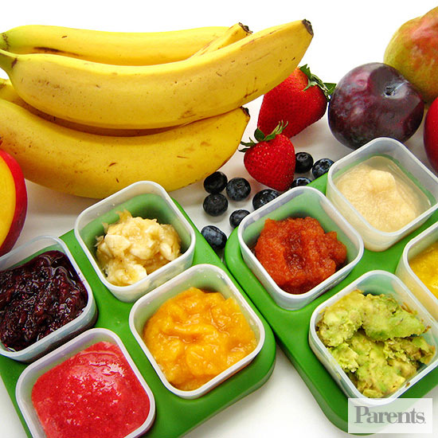
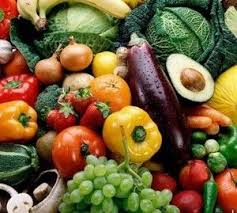
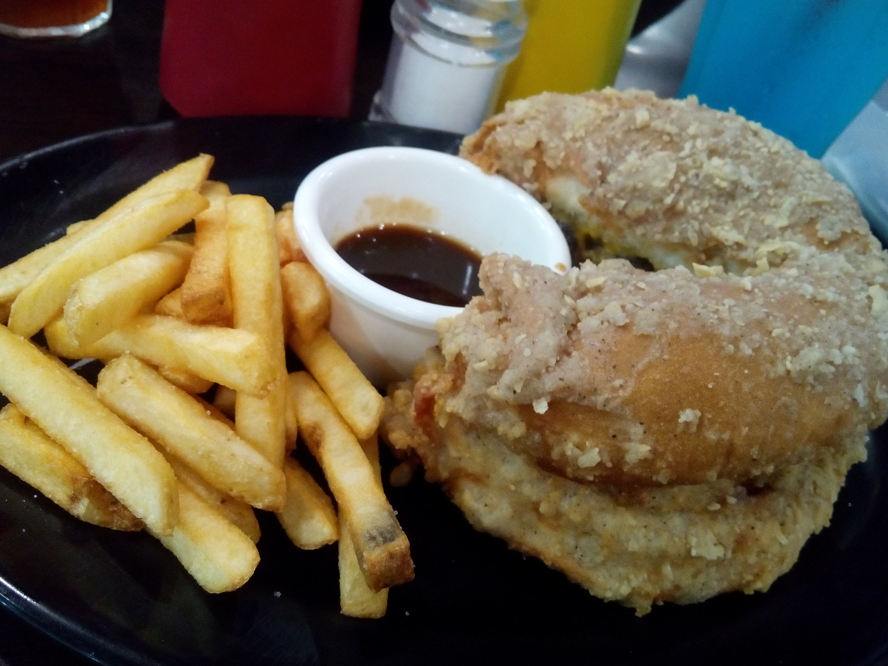
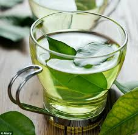

HELLO!
IM DANIELLE!
THIS MY SIMPLE FOODSITE, WHAT FOR?
FOR FOOD AND FOOD AND FOOD ALSO FOR FOOD included also a HEALTHY FOOD
I know your'e confused but healthy food is a food considered beneficial to human health and a healthy diet required for human nutrition. Foods marketed as "healthy" may be natural foods, organic foods, whole foods, and sometimes vegetarian or dietary supplements. Such products are sold in health food stores or in the health/organic sections of supermarkets.
It's my desire to always eat healthy foods, if you control yourself in food whether nutritious or not your body inside and out are healthy so enjoy live, happy life and happy healthy body.
Now you know me, This is me, I love good food, I love healhty body, I love my life.
"Your'e diet is a bank account. Good food choices are good investments."
Danielle Seupon
THIS MY SIMPLE FOODSITE, WHAT FOR?
FOR FOOD AND FOOD AND FOOD ALSO FOR FOOD included also a HEALTHY FOOD
I know your'e confused but healthy food is a food considered beneficial to human health and a healthy diet required for human nutrition. Foods marketed as "healthy" may be natural foods, organic foods, whole foods, and sometimes vegetarian or dietary supplements. Such products are sold in health food stores or in the health/organic sections of supermarkets.
It's my desire to always eat healthy foods, if you control yourself in food whether nutritious or not your body inside and out are healthy so enjoy live, happy life and happy healthy body.
Now you know me, This is me, I love good food, I love healhty body, I love my life.
"Your'e diet is a bank account. Good food choices are good investments."
Danielle Seupon
Foods!
   